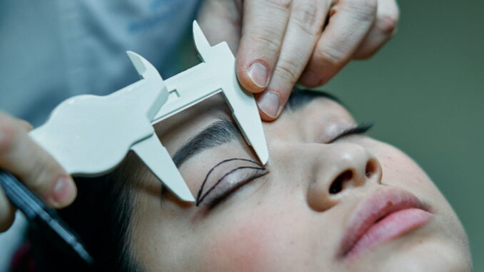

Blefaroplastie versus lifting facial, diferențe, avantaje…
Se spune despre blefaroplastie că este liftingul pleoapelor. Că este cea mai la îndemână metodă de rejuvenare. În acest articol ne propunem să evidențiem diferențele dintre cele două proceduri. Amândouă vă întineresc, dar totuși sunt diferite. Sub foarte multe aspecte, inclusiv financiar.
Deci, blefaroplastia și liftingul facial sunt două proceduri chirurgicale distincte care vizează îmbunătățirea aspectului feței și a regiunii oculare. Să arătăm diferențele principale între cele două metode de a obține câțiva ani în plus la tinerețea ce-o afișăm
Blefaroplastia (chirurgia pleoapelor)
Scopul principal: Blefaroplastia se concentrează asupra îmbunătățirii aspectului pleoapelor superioare și inferioare. Aceasta poate îndepărta excesul de piele, grăsime sau mușchi din jurul ochilor pentru a îmbunătăți conturul și aspectul acestora.
Procedură: În timpul blefaroplastiei, se fac incizii subțiri în zonele specifice ale pleoapelor pentru a elimina excesul de țesut. Aceste incizii sunt de obicei „ascunse” în pliurile naturale ale pielii. Astfel încât cicatricile să fie cât mai puțin vizibile.
Rezultatele așteptate: Blefaroplastia îmbunătățește aspectul obosit și îmbătrânit al ochilor, reduce pungile de sub ochi și pielea lăsată de pe pleoape.
Liftingul facial (ritidectomia)
Scopul principal:Liftingul facial vizează îmbunătățirea aspectului întregii fețe și gâtului. Are ca rezultat întinerirea generală a feței prin îndepărtarea excesului de piele și tensionarea mușchilor și țesuturilor subiacente.
Procedură:În timpul liftingului facial, se fac incizii în zona scalpului și în jurul urechilor, pentru a permite accesul la țesuturile subiacente. Acestea sunt apoi tensionate și fixate într-o poziție mai ridicată, iar excesul de piele este îndepărtat. Liftingul facial poate viza atât zona de jos a feței (cum ar fi bărbia și gâtul), cât și zona de sus (cum ar fi obrajii și fruntea).
Rezultatele așteptate: Liftingul facial poate reduce apariția ridurilor și liniilor fine. Oferă o aparență mai tânără și mai proaspătă a întregii fețe.
Într-o primă concluzie, blefaroplastia se concentrează pe corectarea pleoapelor și a regiunii oculare, în timp ce liftingul facial are un efect mai extins, abordând întreaga față și gâtul pentru a oferi un aspect general mai tânăr.

Diferența de preț este net în favoarea blefaroplastiei
Să fie diferența de preț un criteriu de alegere a blefaroplastiei în loc de liftingul clasic!? Credem că nu. Deși este mai ieftin să intervii doar la pleoape în comparație cu întreaga zonă a feței, nu acesta ar trebui să fie punctul de plecare. Este vorba pur și simplu de oportunitate. Pentru a-și recăpăta zece ani de tinerețe, unii au nevoie de un lifting facial clasic și complet, alții doar de eliminarea aspectului de ochi obosiți. Iar timpul de recuperare este important, după cum se va vedea mai jos.
Diferența de preț între liftingurile faciale și blefaroplastii este influențată de mai mulți factori:
- tehnicile specifice folosite în fiecare procedură
- durata intervenției chirurgicale
- nivelul de experiență al chirurgului
- locația geografică
- resursele utilizate în timpul intervenției.
Liftingul facial este o procedură mai complexă și extinsă decât blefaroplastia. (Și evident mai scumpă. Mult mai scumpă.) Într-un lifting facial, se poate lucra pe mai multe zone ale feței pentru a remedia semnele de îmbătrânire, cum ar fi ridurile, lăsarea pielii și pierderea volumului. Această procedură implică adesea restrângerea și ridicarea țesuturilor faciale, ajustarea mușchilor și eliminarea excesului de piele. Datorită naturii mai extinse a procedurii, este necesară o pregătire și o perioadă de recuperare mai lungă. Aceasta contribuie la niște costuri mai ridicate.
Pe de altă parte, blefaroplastia (chirurgia pleoapelor) se concentrează asupra zonelor din jurul ochilor. Înseamnă îndepărtarea pielii sau a grăsimilor în exces de pe pleoape, corectarea pungilor sub ochi sau ridurilor fine din jurul ochilor. Blefaroplastia, în general, implică o zonă mai mică de lucru. Perioada de recuperare este decisiv mai scurtă decât un lifting facial.
În plus, prețurile pot varia în funcție de chirurg și de locația clinicilor. Chirurgii mai experimentați și cu reputație solidă percep onorarii mai mari pentru serviciile lor. Costurile generale ale vieții și nivelul de trai din diferite zone geografice influențează, de asemenea, prețurile procedurilor chirurgicale.
Blefaroplastia – cea mai populară chirurgie estetică
Nu există o cifră exactă și oficială care să ateste diferența dintre numărul celor care optează pentru blefaroplastie și cei cu lifting facial. Totuși, toate informațiile care vin din Occident ne spun că liftingul pleoapelor este cea mai populară operație estetică.
Esteticienii americani sunt toți de acord că acest tip de chirurgie a depășit demult stadiul de modă, de curiozitate sau de vârstă. A devenit o necesitate, iar acest lucru se datorează evoluției societății. Suntem mai stresați, avem cariere care ne impun anumite standarde de estetică.
Există foarte multe situații când efectul estetic, respectiv cel de întinerire al persoanei, este aproape identic, indiferent că se realizează prin liftingul facial sau prin cel al pleoapelor. Atunci, în aceste cazuri, în luarea deciziei de rejuvenare, a alegerii metodei intervin și alți factori. În afară de preț, timpul de recuperare este unul dintre cei mai importanți.
Timpul de recuperare este deja resursă importantă. Nu suntem toți milionari, nici măcar în timp, de aceea contează enorm să stai câteva zile în repaus după blefaroplastie. Sau, comparativ cu un lifting facial, să ai nevoie de săptămâni întregi pentru recuperare. Cariera persoanlă ar avea de suferit, indiscutabil.
Recomandarea noastră este să consultați un specialist. Doar acesta vă va putea da cel mai documentat sfat. Respectiv vă va ajuta să luați o decizie: blefroplastie sau lifting facial?